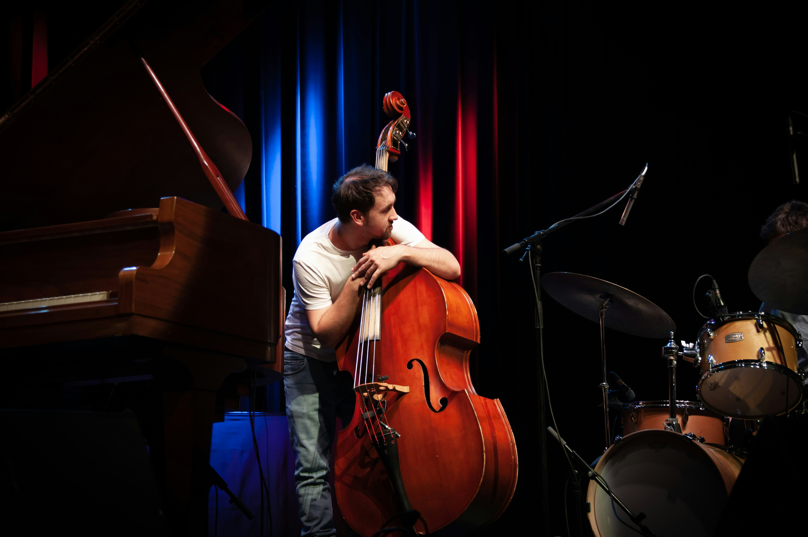
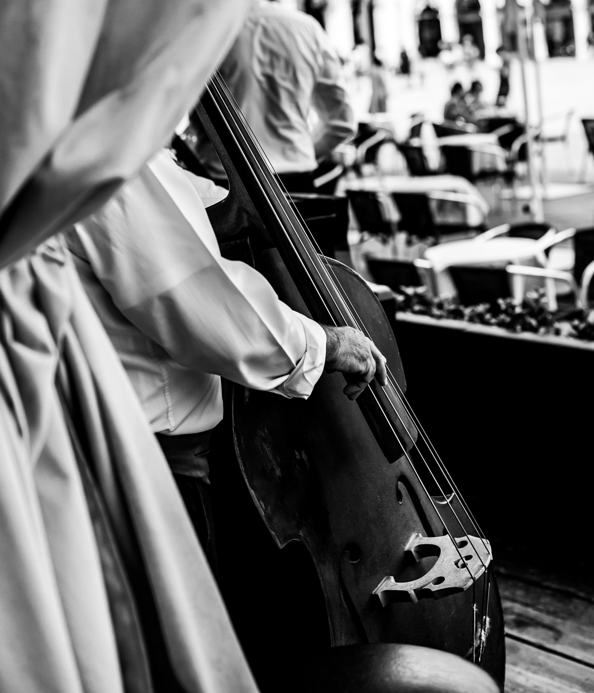

Description:
The double bass is the largest and lowest-pitched instrument in the traditional string family. It is known for its deep, powerful sound and is commonly used in orchestras, jazz groups, concert bands, and many other styles of music. The main parts of a double bass include the scroll, tuning machines, neck, fingerboard, strings, bridge, body, sound holes, tailpiece, endpin, and bow.

How to Play the Double Bass:
The double bass is played either standing or sitting on a tall stool, with the instrument supported by an endpin. The player presses the strings against the fingerboard with one hand and either uses a bow or plucks the strings with the other. In jazz and popular music, plucking the strings is especially common, while bowing is often used in orchestral music.
